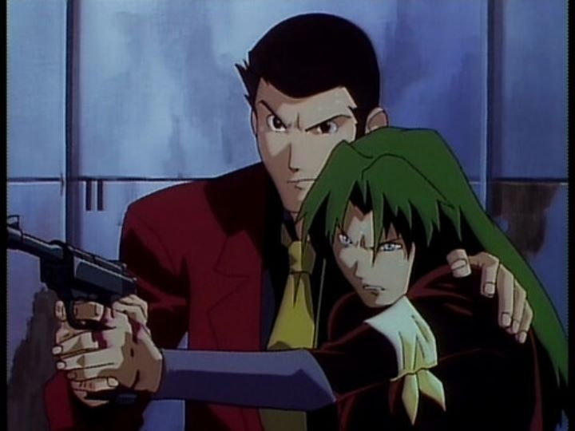

Disclaimer: "Lupin the Third - Island of Assassins" is a feature-length television special, also known by the subtitle "In Memory of the Walther P38."I like "Lupin the Third" as a character, but have to wade through a lot of content to get to the good stuff. One of anime's most classic characters, Lupin has hundreds of television episodes, and more feature films (and feature-length television specials) than James Bond. I bought the 1997 special "Island of Assassins" on a whim, based on a random forum user's comment that recommended it for having "a lot of sakuga" (a Japanese term for impressive and expressive animation). Further research shows it being one of the better regarded Lupin specials, although there are so many that it's difficult to find a conclusive best. Anyway, "Island of Assassins" turned out to be pretty decent. Yes, the animation is a bit better than average, with plenty of action scenes and shots of Lupin dodging guns and knives, sometimes from dozens of foes at a time. But outside those scenes, animation can sometimes be non-existant. The character design and art direction also leaves a lot to be desired, with some unusual body proportions and ugly faces. The movie feels like an extended bonus episode (complete with breaks for commercials) of Lupin's Red-Jacket adventures in the Part II series... which is strange, since the film was broadcast in 1997, almost two decades later, despite still looking as though it came from 1980. Regardless, the story came around to impress me the most. Lupin is in the middle of a heist from a large mansion, with Inspector Zenigata on site to stop him (just another Tuesday for the series). But a group of infamous assassins called the "Tarantulas" appears to kill the nobles at the scene, and they shoot Zenigata with an identical gun to Lupin's favourite Walther P38. Naturally, Lupin is framed for the attack, and he lays low to travel to the assassin's secret island, located in the Bermuda Triangle, uncovering an international group of assassins forced to work behind the scenes on behalf of the world's governments. It's a decent-enough premise, one that possibly doesn't take advantage of the mystery opportunities the way you'd expect, but still remains engrossing. It helps to have a one-time female opposite that's strong and engaging. Lupin's crew is also involved with the island (a secret stash of gold may exist somewhere on the rock), and Jigen, Goemon and Fujiko each get plenty opportunity to shine (Goemon in particular is funnier than usual). Direction is confidently solid. While there is blood and violence, the film as a whole is funny, and generally appropriate even for young audiences. The English script and dub is surprisingly good for the four main characters, significantly enhancing the experience, but a handful of extra characters (including Zenigata himself) don't sound quite right. The soundtrack makes a few callbacks to the television series and the classic theme song, and appropriate (if expected) background music for tense moments.Most "Lupin" specials range from ok to poor; only a handful of films, typically the theatrically-released ones, stand out as being exceptional enough to seek out. If you've seen one "Lupin" adventure, you've seen them all. "Lupin the Third - Island of Assassins" is a good choice, representing a lot of what makes Lupin's adventures fun in the first place.
- "Ani" More reviews can be found at : https://2danicritic.github.io/ Previous review: review_Lupin_the_Third_-_Green_VS_Red Next review: review_Lupin_the_Third_-_Jigen's_Gravestone